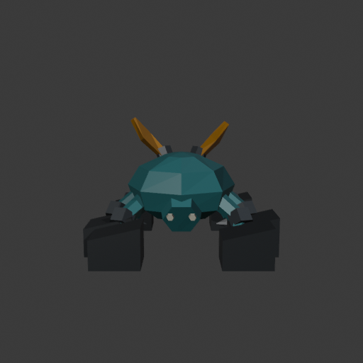
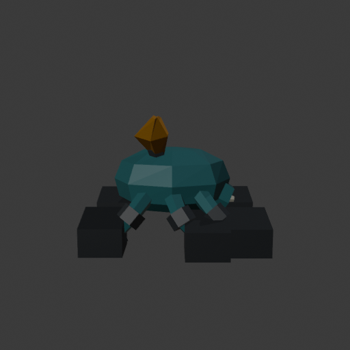
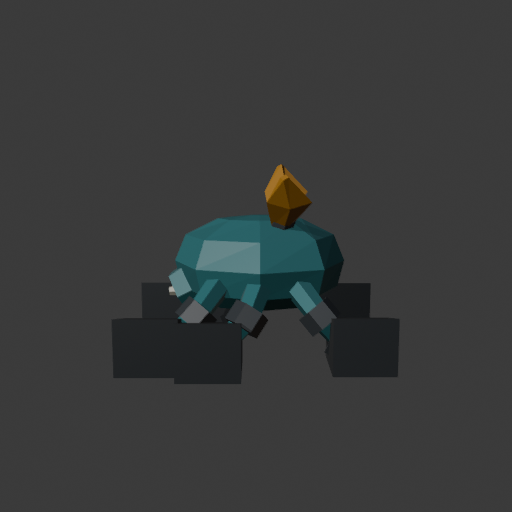
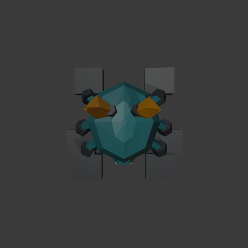
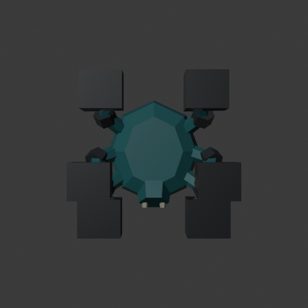

Rootbound dossier · Trailgloam
Actual Blender candidate. Six grounded articulated legs, low teal body and forward face, two exposed amber folded fronds. No rig, animation, export or gameplay admission yet. Useful shape is judged independently of exact target matching.
Independent verdict: retain with specific debt. Keep the body, forward face, articulated chains and visible fronds. A focused hoof-only repair should soften the oversized black cuboid feet before motion work.





50 separate closed solids / 1,024 triangles. Proposed envelope 2.34 × 2.27 × 1.643m. One guarded build produced 21 views at 512/96/48px. The large dark hoof blocks are visible remaining art debt; the complete limb layout, eyes and exposed fronds are retained for review.
Independent visual decision · Execution facts · Import and topology receipt · Source review · Measured plan · 96px · 48px

Earlier partial construction probe. The new full model fixes its hidden amber blade while preserving the proven closed cuffed-chain method.
{kind=link}
{kind=link}